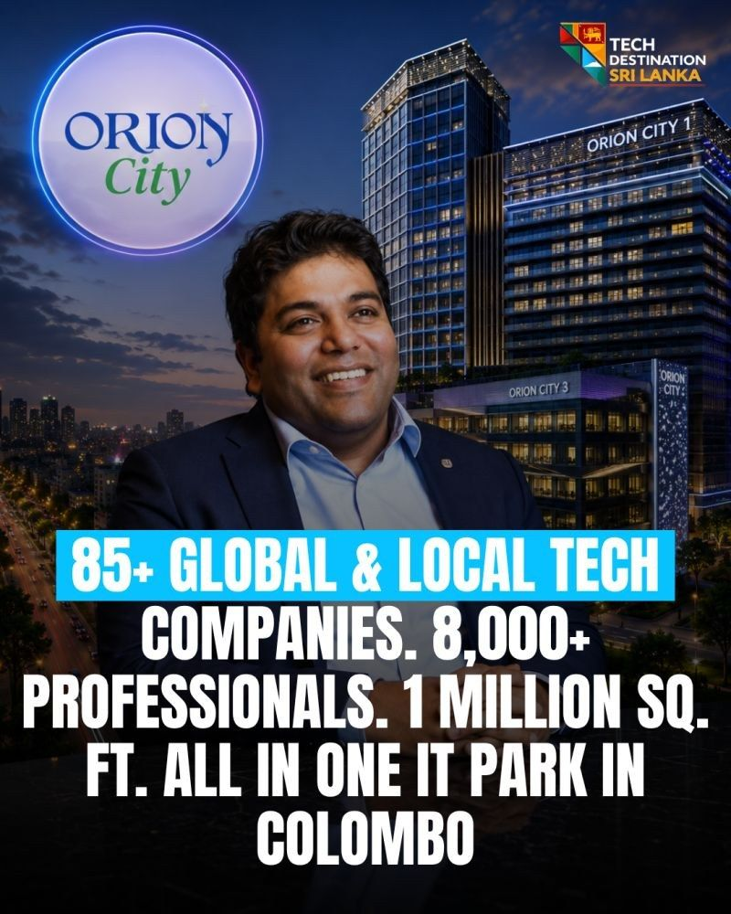

One founder's bet on a purpose built IT park now houses 85+ companies and 8,000 professionals. Meet Orion City
In 2007 Sri Lanka had no purpose built IT park. Jeevan Gnanam started one with 10,000 sq. ft. and Virtusa as the first tenant.

- 85+
- companies on campus
- 8,000+
- professionals on site
- 1M
- sq. ft. developed
In 2007, Jeevan Gnanam had an idea most people around him did not understand.
Sri Lanka had no purpose built IT park. Tech companies were scattered across converted office buildings never designed for them, with unreliable power, no real infrastructure and no ecosystem. Jeevan believed that if you built a proper home for technology companies, the industry would come.
He started small. The first phase was around 10,000 sq. ft. The first tenant was Virtusa.
Then it grew
Today Orion City spans 16 acres and 1 million sq. ft. of developed space. It houses 85+ local and international companies, including IFS, Virtusa, WNS, Michelin, Synopsys, Pearson and Infomate, and 8,000+ professionals work on site.
The infrastructure became what Jeevan imagined and more: a LEED Gold certified tower, 700 kW of solar power, a Tier III ready data center, uninterrupted power around the clock, and a full campus with a hotel, gym, dining and retail.
Beyond real estate
Jeevan went on to cofound Hatch, Sri Lanka's largest startup incubator. He cofounded the Lankan Angel Network to fund early stage ventures. And he now leads Sri Lanka's first high density data center.
Global companies that want to establish in Sri Lanka will find the infrastructure already built for them.
Sources
